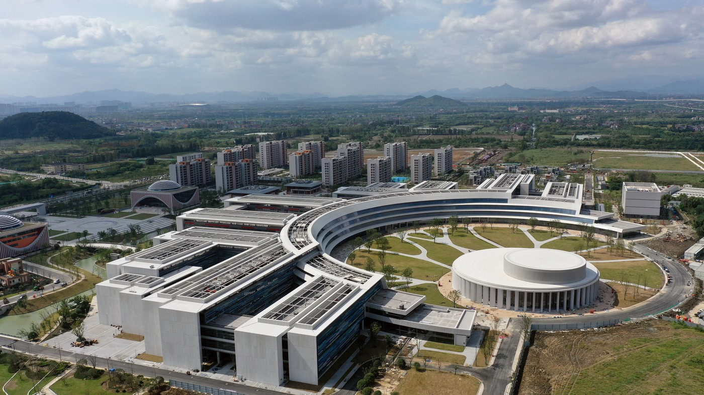
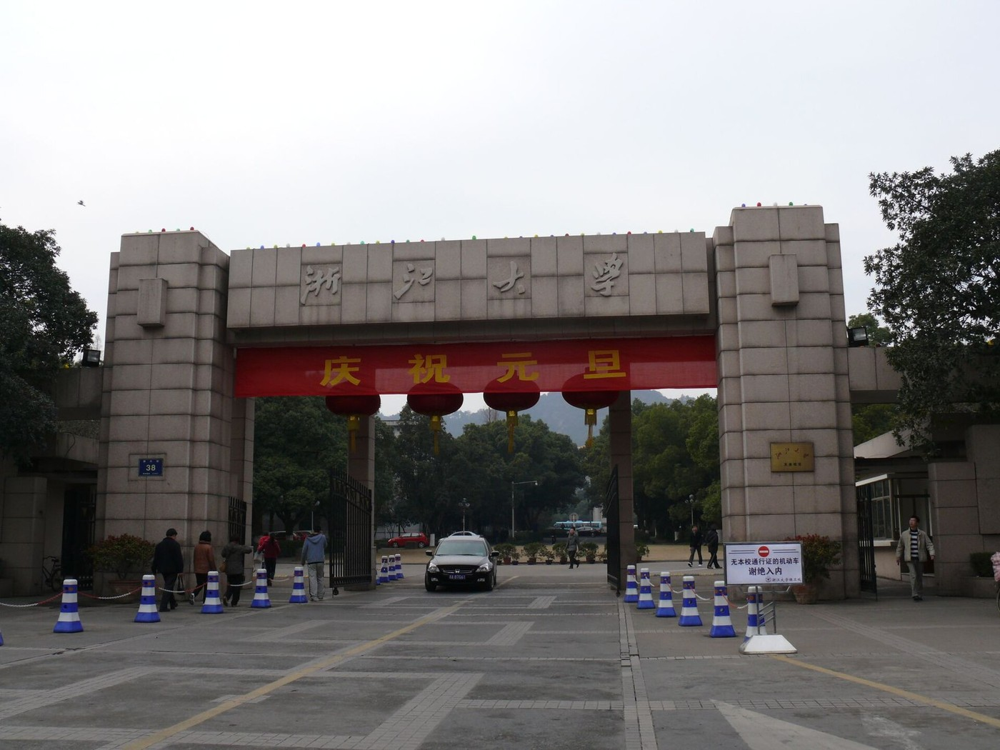
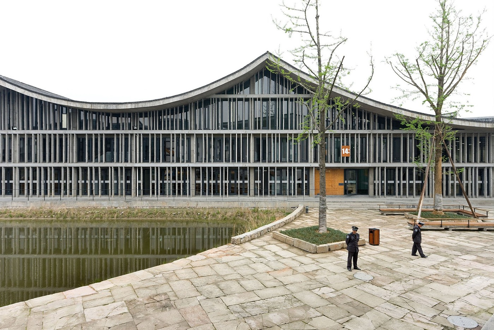
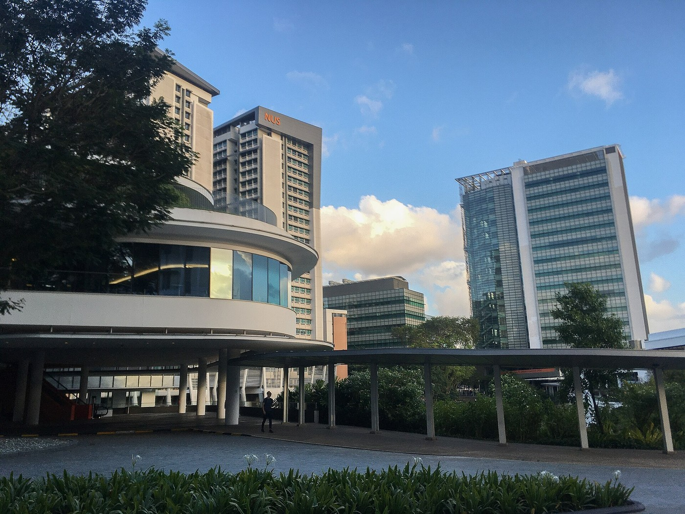

Photo: Courtesy of HENN (architects), via ArchDaily · ArchDailyUnit 10 of 10
The University Map
Tsientang will compete for students and professors with universities in the city, the province, the country and the rest of Asia. Here is who they are.
- how Chinese universities are measured: the gaokao exam, the C9 League and the world rankings
- which universities are in Hangzhou, the Yangtze Delta, China and the rest of Asia
- the new wave of privately funded research universities Tsientang belongs to
- where Chinese students and professors go, and who comes back
- what Tsientang has that its rivals do not, and what it still lacks
- Gaokao
- China's national college entrance exam, sat each June; scores decide which university a student can enter.
- C9 League
- Nine top public universities that formed an alliance in 2009, China's rough equivalent of the Ivy League.
- Double First-Class
- A national program, reviewed every five years, that names universities and subjects to build to world-class level.
- Ranking
- A league table of universities. The three best known are QS, Times Higher Education (THE) and the Shanghai Ranking (ARWU).
- Postgraduate
- A student working toward a master's or doctoral degree after a first degree.
- Returnee
- A Chinese student or scientist who studied or worked abroad and came back; the nickname is "sea turtle," a pun in Chinese.
10.1 How universities are measured
Every June about 13 million Chinese teenagers sit the gaokao, an exam of two to four days, scored out of 750 in most provinces. The number has fallen two years running, from 13.42 million in 2024 to 12.9 million in 2026. Scores are compared within a province, and each university sets the lowest score it will take from each province. In 2025 the cutoff for Tsinghua in Henan, China's most crowded exam province, was 700 out of 750. Tsinghua and Peking together took about 6,800 mainland students that year, about half of them through special channels such as competitions and early admission: about one exam taker in two thousand.
Above the gaokao sit two official labels. The C9 League, formed in 2009 from the first universities chosen for the national "Project 985" funding program of 1998, groups nine public universities: Peking, Tsinghua, Fudan, Shanghai Jiao Tong, Zhejiang, Nanjing, the University of Science and Technology of China, Harbin Institute of Technology and Xi'an Jiaotong. The Double First-Class program, run from Beijing, lists 147 universities and 331 subjects (February 2022 list) that get extra money to reach world level by 2030.
Outside China, three rankings matter. QS (from a British company) counts reputation surveys for 45 percent of its score, plus citations per faculty member and the ratio of staff to students. Times Higher Education (THE) scores teaching, research, citations and international outlook, and also uses reputation surveys. The Shanghai Ranking (ARWU), published in Shanghai since 2003, counts hard outputs: Nobel prizes and Fields Medals, highly cited researchers, papers in Nature and Science, and indexed papers. The same university can sit 50 places apart on two lists, which is why the table in 10.5 shows all three.
10.2 Hangzhou's universities
Hangzhou had 40 universities and 645,000 students at the end of 2025, 136,000 of them postgraduates. Two matter most for Tsientang.
Zhejiang University (浙江大学, "Zheda") is the giant. Its roots go back to the Qiushi Academy of 1897; it took its present name in 1928 and is a C9 member. It is 24th in the world on the Shanghai Ranking, 39th on THE and 49th on QS (2025 and 2026 editions), and its budget of 26.1 billion yuan in 2022 was second in China after Tsinghua. Counts of its students run from 54,000 (THE) to 78,000 (Wikipedia, 2024), depending on who is counted. It has several campuses: Zijingang in the northwest is the main one; Yuquan is the old campus near West Lake; Zhijiang is in the southwest hills; and an international campus in Haining, east of the city, had 3,309 students in September 2025, 584 of them from abroad. Its design institute, UAD, is the local design institute for the Tsientang campus, and Tsientang's first doctoral students are registered at Zheda and will get Zheda degrees.


Westlake University (西湖大学) is the model. It is a private, non-profit research university founded by the structural biologist Shi Yigong, a former vice president of Tsinghua, with 36 founding donors and about 400 other contributors; three district governments gave land and buildings. The Ministry of Education approved it in spring 2018 and it opened on 20 October 2018 with 120 doctoral students chosen from about 1,500 applicants. Its first undergraduates, no more than 60, all from Zhejiang, arrived in 2022; by 2024 the entering class was about 90 Chinese students plus 8 from abroad, and in 2025 its lowest gaokao score in Henan was 674. It had about 3,200 students in July 2026 and plans 5,000 by 2030, 3,000 of them doctoral. It has two campuses, both in Xihu District. The first, Yunqi, is in Yunqi Town in the south of the district, a short drive from the Tsientang site. The main one, Yungu, is in the Zijingang science city in the northwest; its third phase finished in June 2025. In a December 2017 speech Shi said that within 15 years every measure would match Caltech. It sits in the 201 to 300 band of the 2026 Shanghai Ranking, eight years after opening.
The neighbors. Within a kilometer of the Tsientang site are two of China's leading arts schools: the China Academy of Art, founded 1928, whose Xiangshan campus was designed by Wang Shu, winner of the 2012 Pritzker Prize, and the Zhejiang Conservatory of Music, founded in 2016. Across the city, the Future Sci-Tech City in Yuhang District holds the offices of Alibaba and ByteDance, among others.
The city's pull. Hangzhou took in more than 428,900 graduates under 35 in 2025 and paid 2 billion yuan in employment and start-up subsidies. A new graduate who settles in the city gets a living allowance, paid in two halves, of 10,000 yuan for a bachelor's degree, 30,000 for a master's and 100,000 for a PhD, plus, for those who own no home in the city, a rent subsidy of 10,000 yuan a year for up to three years; start-up grants run from 50,000 to 200,000 yuan.

10.3 The region: the Yangtze Delta
Unit 5 showed that Hangzhou sits in the Yangtze River Delta, China's richest city region. It is also the densest cluster of top universities outside Beijing. An hour away in Shanghai are Fudan (1905; 30th on QS), Shanghai Jiao Tong (1896; 30th on the Shanghai Ranking) and Tongji (1907), famous for civil engineering and architecture. About an hour and a half away in Nanjing are Nanjing University (1902) and Southeast University, with a strong architecture school. In Hefei, the University of Science and Technology of China (USTC), founded in Beijing in 1958 and moved during the Cultural Revolution, is fifth in the world on the 2025 Nature Index, which counts papers in top science journals, behind Zhejiang, Tsinghua and Shanghai Jiao Tong among Chinese universities.
Shanghai also has two of the new-style schools Tsientang will be compared with. ShanghaiTech (2013) was set up by the city government and the Chinese Academy of Sciences on a 0.6 square kilometer campus that cost the city about 4.2 billion yuan; it has about 3,100 students and keeps its student-to-faculty ratio at 12 to 1 or lower. NYU Shanghai (2012), run with East China Normal University, teaches in English and has about 2,100 students; about half of its first class came from outside China.
10.4 China: the top two and the new wave
At the top of every Chinese list sit Tsinghua and Peking universities in Beijing, 12th and 13th in the world on THE 2026 and 17th and 14th on QS. Tsinghua takes about 4,000 new undergraduates a year and Peking about 4,500, about half of them through special channels such as competitions and early admission.
Below them, a new wave of research universities has appeared in the last fifteen years, funded by city or provincial governments, private donors or both, with no money from the Ministry of Education. Tsientang is the newest and the best funded. Here they are, oldest first:
| University | Opened | Who pays | First class | Today |
|---|---|---|---|---|
| SUSTech Shenzhen | 2010 | Shenzhen city; 4.15 billion yuan budget (2020) | Small early classes; 10,263 students by 2022 | 14,000+ students; Shanghai Ranking 101–150 (2026) |
| ShanghaiTech Shanghai | 2013 | Shanghai city and the Chinese Academy of Sciences | 2014 | About 3,100 students; Shanghai Ranking 201–300 (2026) |
| Westlake Hangzhou | 2018 | 36 founding donors, about 400 others | 2022: 60, all from Zhejiang | About 3,200 students; Shanghai Ranking 201–300 (2026) |
| Fuyao Fuzhou | 2025 | Cao Dewang (glass); 10 billion yuan first phase | 2025: 50, from five provinces; lowest gaokao 616 (Guangxi) | 302 faculty, 15 academicians; plans 12,000+ |
| Eastern Institute Ningbo | 2025 | Yu Renrong (chips); "over 20 billion yuan" reported | 2025: 70, all from Zhejiang, lowest 656 | 16 academicians; about 1.5 million m² of floor area planned |
| Great Bay Dongguan | 2025 | Guangdong province and Dongguan city | 2025: 80, computer science, lowest 622 | About 300 staff; aims at 3 students per teacher |
| Tsientang Hangzhou | 2026* | Zhong Shanshan (water); 40 billion yuan pledged | 2026: 14 doctoral students, via Zhejiang University | Institute of 82 staff; campus under construction; plan of about 3,000 |
Tap a column heading to sort. *Tsientang's institute took its first students in 2026; the university itself has no opening date. An "academician" is a member of the Chinese Academy of Sciences or Engineering, the country's highest scientific honor.
The pattern is similar each time: a research institute first, then Ministry approval, then a small first class, mostly from the home province, then growth. Westlake took three years from proposal (2015) to approval (2018) and four more to its first undergraduates (2022). Fuyao got its Ministry notice in January 2025 and enrolled that September. The Eastern Institute of Technology was approved in June 2025 and enrolled the same autumn. Tsientang has the institute (2025) and the first doctoral students (2026); the approval has not been published.
Professors. The new universities compete for the same people: Chinese-born scientists at universities abroad. The flow back has grown. A Stanford study counted 31 scientists returning to China in 2004 and 1,409 in 2022. Westlake's roughly 300 professors have an average age of 42, and 85 percent have worked abroad.
10.5 Asia: the table
A student in Hangzhou choosing between Tsientang and the world is also looking at Singapore, Hong Kong, Tokyo and Seoul. The table shows the three rankings side by side for the universities Tsientang will be measured against. Student counts are THE's, which differ from the schools' own.
| University | City | QS 2026 | THE 2026 | Shanghai 2025 | Students |
|---|---|---|---|---|---|
| National University of Singapore | Singapore | 8 | 17 | 56 | 35,558 |
| University of Hong Kong | Hong Kong | 11 | 33 | 67 | 17,668 |
| Nanyang Technological University | Singapore | 12 | 31 | 88 | 25,859 |
| Peking University | Beijing | 14 | 13 | 23 | 35,659 |
| Tsinghua University | Beijing | 17 | 12 | 18 | 38,569 |
| Fudan University | Shanghai | 30 | 36 | 41 | 38,601 |
| Chinese University of Hong Kong | Hong Kong | 32 | 41 | 101–150 | 18,461 |
| University of Tokyo | Tokyo | 36 | 26 | 31 | 26,298 |
| Seoul National University | Seoul | 38 | 58 | 81 | 26,783 |
| Hong Kong University of Science and Technology | Hong Kong | 44 | 58 | 201–300 | 8,912 |
| Shanghai Jiao Tong University | Shanghai | 47 | 40 | 30 | 41,507 |
| Zhejiang University | Hangzhou | 49 | 39 | 24 | 54,313 |
| Kyoto University | Kyoto | 57 | 61 | 46 | 21,617 |
| National Taiwan University | Taipei | 63 | 140 | 201–300 | 18,743 |
| Nanjing University | Nanjing | 103 | 62 | 75 | 34,217 |
| IIT Delhi | Delhi | 123 | not listed | 601–700 | n/a |
| IIT Bombay | Mumbai | 129 | not listed | 801–900 | n/a |
| University of Science and Technology of China | Hefei | 132 | 51 | 40 | 22,955 |
| Tongji University | Shanghai | 177 | 141 | 101–150 | 33,414 |
| Indian Institute of Science | Bangalore | 219 | 201–250 | 501–600 | 5,020 |
| SUSTech | Shenzhen | 343 | 160 | 101–150 | 8,193 |
| Southeast University | Nanjing | 392 | 251–300 | 101–150 | 43,942 |
| KAIST | Daejeon | not ranked | 70 | 201–300 | 10,728 |
| ShanghaiTech | Shanghai | not listed | not listed | 301–400 | about 3,100 |
| Westlake University | Hangzhou | not listed | not listed | 301–400 | about 3,200 |
Tap a column heading to sort. Ties are shown at the tied rank. KAIST was left out of QS 2026 for a year; IIT Delhi and IIT Bombay are not in THE; ShanghaiTech and Westlake do not appear on QS or THE. Newer editions came out during 2026 (QS 2027 in June, Shanghai 2026 in August, THE 2027 in October); the biggest change is that Westlake and ShanghaiTech moved up to 201–300 on the Shanghai Ranking. Sources at the end of the unit.
Two things stand out. First, the top of Asia is Singapore and Hong Kong on QS, but Beijing on THE and Shanghai Ranking: the rankings disagree about who is best, and all of them put Zhejiang University in the world's top 50. Second, Westlake and ShanghaiTech are absent from QS and THE but already appear on the Shanghai Ranking, which counts research output alone. That is the ladder Tsientang will climb if it climbs at all.

.jpg){kind=link}
10.6 Who goes where
Chinese students are the world's biggest group of international students. Between 1978 and 2024, 8.88 million went abroad to study and 6.44 million came back; in 2024 alone 495,000 returned, up 19 percent in a year. The United States had 265,919 Chinese students in 2024/25, down from a peak of about 370,000 in 2019, and for the second year in a row fewer than India's 363,019. The other big destinations are Australia, Britain and Japan. Hong Kong is rising fast: its publicly funded universities had 21,104 mainland students in 2024/25, up 18 percent, and a 2026 report on mainland students in Hong Kong said the city had overtaken the United States as their second most popular destination.
The traffic runs the other way too. China had 492,185 international students in 2018, the latest official count found, the largest group from South Korea. Westlake's 2024 undergraduate class was about 8 percent international (8 of 98), and NYU Shanghai's first class was half international by design.
10.7 Where Tsientang fits
Set against this map, Tsientang University is three things at once.
The best-funded new university in China. Forty billion yuan from one founder, with the first 10 billion already paid in, is twice the reported pledge behind the Eastern Institute in Ningbo, four times Fuyao's first phase and about nine times the 4.3 billion yuan of donations Westlake had been promised by the end of 2018. The press puts the 40 billion near five years of Nongfu Spring's profit. Westlake was started by scientists with many backers; Tsientang has one, an entrepreneur who says he wants a university "China does not yet have."
A second Westlake, in the same city. Both are private, non-profit, research-first, doctoral-heavy, aimed at about 3,000 to 5,000 students, and both are in Xihu District. The provincial government backs Westlake, the Eastern Institute and Tsientang. The difference Tsientang claims is structure: no schools or departments, research organized around problems, and a campus designed to be opened to the public rather than fenced.
A project, not yet a university. It has an institute with 82 staff, a construction contract, 14 doctoral students on another university's books and a provisional name. Westlake needed three years from proposal to approval. On that timing, with the institute registered in 2025 and a campus on an 893-day construction schedule, the first students who can call themselves Tsientang graduates would arrive around the end of the decade. Nobody has published a date.
For a student or professor weighing it, the questions are the ones this table raises: will it be approved, how soon will it appear on the Shanghai Ranking, and can it recruit against Zhejiang University and Westlake across town. For your team one thing is already settled: no rival had this much money pledged, or this architect, at the same age.
Check your understanding
- What is the gaokao, and roughly how many students sat it in 2026?
Show answer
China's national college entrance exam, held each June. About 12.9 million students registered in 2026.
- Name three of the C9 League universities within three hours of Hangzhou.
Show answer
Any three of Zhejiang, Fudan, Shanghai Jiao Tong, Nanjing and USTC.
- Why does Westlake appear on the Shanghai Ranking but not on QS or THE?
Show answer
The Shanghai Ranking counts research output only, which a young university can produce quickly. THE requires undergraduate teaching and a minimum number of papers, and both QS and THE lean on reputation surveys, which take years to build.
- What did Westlake, Fuyao and the Eastern Institute each do before taking their first undergraduates?
Show answer
Each got approval from the Ministry of Education; their first classes were small (50 to 70 students) and mostly from one province.
- In what ways is Tsientang most like Westlake, and in what way most different?
Show answer
Alike: private, non-profit, research-first, doctoral-heavy, about 3,000 to 5,000 students, in Xihu District. Different: one founder with 40 billion yuan, against Westlake's many donors; and Tsientang plans no departments.
Sources
- Rankings: ShanghaiRanking ARWU 2026, QS World University Rankings 2026 (list as published by QS, copy hosted by Masaryk University), Times Higher Education World University Rankings 2026, ShanghaiRanking ARWU 2025, QS Asia University Rankings 2026, Korea JoongAng Daily: KAIST left out of QS 2026
- Gaokao and admissions: Caixin Global, 5 Jun 2026, China Daily, 3 Jun 2026, MBAChina, Aug 2025: Tsinghua and Peking intakes, Sohu: 2025 cutoff scores, NetEase: Westlake's 2025 cutoffs
- Programs: Wikipedia: C9 League and Science and Technology Daily, Mar 2022: Double First-Class
- Hangzhou: Hangzhou News, 30 Apr 2026: the city's 2025 statistical bulletin, Wikipedia: Zhejiang University, ZJU International Campus, China Daily Asia: Hangzhou's 2025 graduate intake, Hangzhou News, 2 Sep 2025: graduate subsidies, Wikipedia: China Academy of Art, Wikipedia: Zhejiang Conservatory of Music
- Westlake: Sixth Tone, 2018: approval, THE, 2018: first postgraduates and the Caltech aim, Wikipedia: Westlake University, Hangzhou.com.cn, Jul 2022: first undergraduates, Westlake press release, 2024: class of 2028, The Paper: Westlake's 2030 plan, University World News, 1 Jul 2026: Westlake and TIAS, Baiguan: Westlake's faculty
- The new wave: SUSTech: facts, Wikipedia: ShanghaiTech, Wikipedia: NYU Shanghai, The Paper, Jan 2025: Fuyao's Ministry notice, China Daily, 7 Aug 2025: first classes at Fuyao, the Eastern Institute and Great Bay, Wikipedia: Eastern Institute of Technology, Ningbo, ScienceNet, Jul 2025: Great Bay University, Sina, 22 Jan 2026: Tsientang among China's new research universities
- Professors and student flows: THE: the Stanford study of returning scientists, Chinese government, Dec 2025: returnee statistics, IIE Open Doors 2025, GSL Global: destinations, The PIE News: Hong Kong, SCMP, 2026: Hong Kong as second choice, China Services Info: international students in China, 2018
- Tsientang: Tsientang Institute for Advanced Study, Tencent News, 7 Sep 2026: first doctoral students, The Paper, 24 Jan 2025: the pledge and the five-years-of-profit comparison